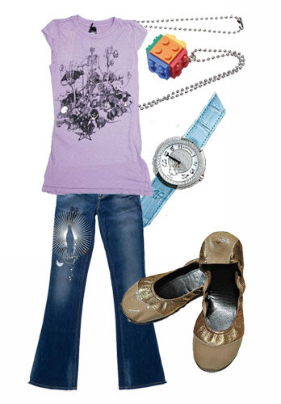
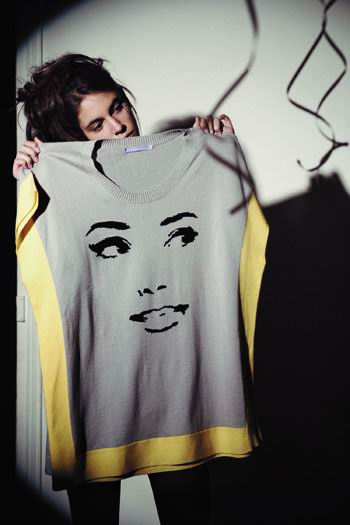

平时生活中，我比较喜欢轻松自在的穿衣风格，因为我一直是向往自由的感觉，就像鸟儿在空中飞翔一样没有拘束。
我经常去BREAD N BUTTER挑选衣服，就是喜欢它的轻松自在，没有距离感，却很有风格。
在这样的季节里，我同样喜欢和BREAD N BUTTER一起迎接每一天的新挑战。对我来说，BREAD N
BUTTER就像我生活的一部分。

忘掉昨天的成就或者失败，每天都要以零基础的心态，去寻找机会，去努力。不给自己太多压力，以享受自然的方式去享受每一天的充实。生活就像每天清晨起来空腹吃一片新鲜的黄油面包般轻松自在，舒适就从第一口咬下开始充满整个身体。
